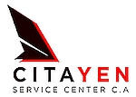

Especialistas en mantenimiento de aeronaves ejecutivas Cessna
Citation y Piper PA-31T en Venezuela.
Hangar en el Aeropuerto Metropolitano de Ocumare del Tuy.
No hacemos mantenimiento general. Nuestra experiencia está concentrada en dos plataformas: la familia Cessna Citation y el Piper PA-31T Cheyenne. Eso significa diagnósticos más rápidos, menos tiempo en tierra y un trabajo con la precisión que solo da la repetición constante.
Operamos desde el Aeropuerto Metropolitano (SVCS), en Ocumare del Tuy, a 45 minutos de Caracas y a 20 de Charallave. Una ubicación ideal para atender aeronaves que vuelan hacia el centro y oriente del país sin desviarse de su operación.
Aplicamos procedimientos de los fabricantes (Textron Aviation, Piper Aircraft) con técnicos licenciados por el INAC. Pero además entendemos la realidad local: la humedad del trópico, los ciclos operativos cortos y la importancia de mantener su aeronave disponible.
Citayen nació de una certeza: en Venezuela faltaba un centro de mantenimiento que tratara a los Citation y a los Cheyenne no como un avión más, sino como lo que son: máquinas complejas con personalidad propia, que exigen manos que las conozcan al dedillo.
Desde nuestro hangar en el Aeropuerto Metropolitano de Ocumare del Tuy, unimos dos pasiones en una sola palabra y una sola misión: ofrecer servicios de mantenimiento aeronáutico civil con los más altos estándares, aplicados por un equipo que literalmente sueña con PT6A, JT15D, hélices Hartzell y paneles Pro Line.
No trabajamos con todo. Trabajamos con lo que sabemos. Y lo sabemos porque lo hacemos todos los días.
(Complete con los nombres y fotos reales del personal)
Hangar de 400 m² con capacidad para dos aeronaves simultáneas, iluminación LED, herramientas calibradas, zona de almacenamiento de partes, sala de pilotos con wifi y aire acondicionado.
En Citayen estructuramos nuestro trabajo alrededor de las necesidades reales de cada plataforma. Ofrecemos desde inspecciones de rutina hasta reparaciones mayores, siempre bajo los mismos principios: técnicos especializados, procedimientos OEM, comunicación constante y plazos que se respetan.
Modelos atendidos: Citation I, II, Bravo, Ultra, Encore, Excel, Sovereign y otros bajo consulta.
Modelos atendidos: PA-31T Cheyenne I, II, IIXL y variantes.
Situación inicial: aeronave estacionada por más de 3 años sin programa de preservación.
Trabajos realizados: inspección completa de corrosión, overhaul de motores JT15D-4, cambio de mangueras, sellos y mazos eléctricos deteriorados, actualización de aviónica básica, repintado exterior parcial.
Resultado: aeronave puesta en servicio con nueva aeronavegabilidad, operando exitosamente vuelos chárter desde Caracas.
"Pensé que ese avión no volaba más. Citayen me demostró lo contrario."
Situación inicial: panel analógico King Silver, sin GPS aprobado para procedimientos RNAV, sin ADS-B.
Trabajos realizados: instalación de Garmin GTN 750, GTN 650 secundario, transpondedor GTX 345 con ADS-B Out/In, audio panel GMA 35 y G500 TXi.
Resultado: cabina completamente operativa para espacio aéreo actual, con redundancia y valor de reventa incrementado.
"Pasé de volar con cartas de papel a tener todo en pantalla. La integración quedó impecable."
Situación inicial: cliente corporativo con parada programada de 14 días.
Trabajos realizados: ejecución simultánea de tareas por dos equipos (célula y motor). Jornada nocturna controlada para absorber imprevistos.
Resultado: aeronave entregada en 13 días, completamente inspeccionada y con informe digital. El cliente no perdió un solo día de operación programada.
"Ni en talleres más grandes había visto cumplir un plazo tan ajustado con ese nivel de detalle."
Nuestra especialización está en esas dos familias. Excepcionalmente y dependiendo de la carga de trabajo, podemos evaluar trabajos menores en otras aeronaves ejecutivas de similar complejidad.
Contamos con relaciones estables con proveedores internacionales y manejamos canales logísticos que han demostrado funcionar. Además mantenemos un inventario estratégico de partes de alta rotación.
Se entrega un paquete de liberación que incluye orden de trabajo detallada, registros de cumplimiento de AD/SB, reporte de inspección y garantía escrita sobre la mano de obra.
Sí, todos nuestros trabajos tienen garantía sobre la mano de obra ejecutada, por el período y condiciones que se especifican en la orden de servicio.
La mayoría de los trabajos requieren ejecutarse en nuestro hangar, donde tenemos todas las herramientas y control de calidad. Para evaluaciones o servicios menores, podemos coordinar una visita previa.
Sí, Citayen opera con las pólizas de seguro requeridas para la actividad, incluyendo responsabilidad civil hangar y trabajos aeronáuticos.
Puede escribirnos por WhatsApp, llenar el formulario de contacto en nuestra web, o visitarnos directamente en el Aeropuerto Metropolitano.
WhatsApp: +58 XXX-XXXXXXX
Correo: info@citayen.com
Dirección: Hangar Citayen, Calle de Rodaje Principal, Aeropuerto Metropolitano de Ocumare del Tuy (SVCS), Municipio Tomás Lander, Estado Miranda, Venezuela.
Horario: Lunes a viernes de 08:00 a 17:00. Sábados y trabajos nocturnos con coordinación previa.